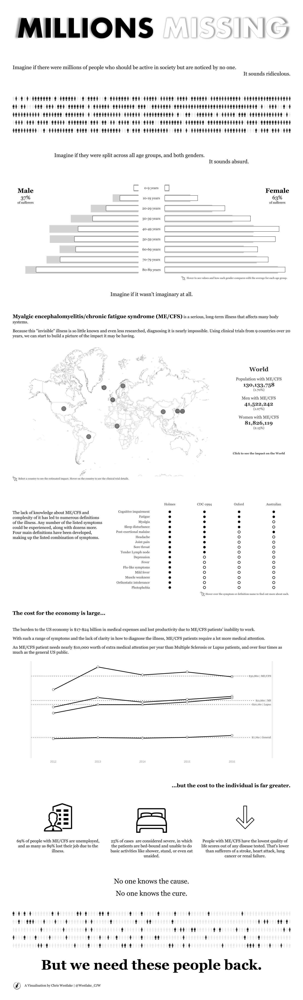
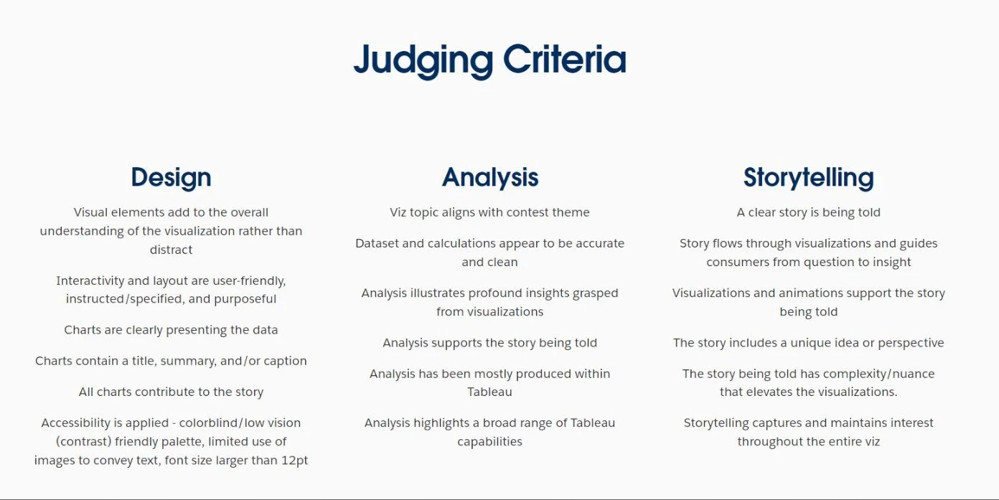
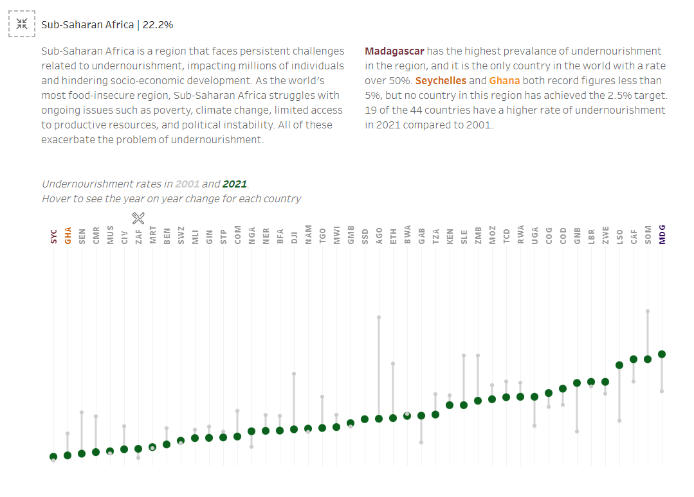
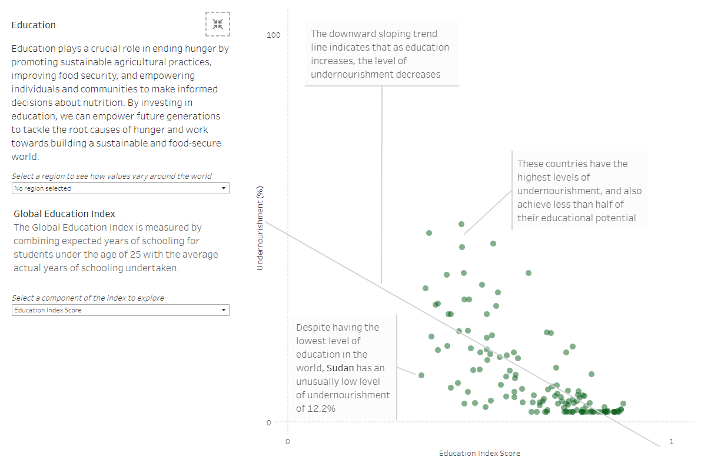

We’re into the final push on the IronViz Qualifier round for 2025. Over the past weeks I’ve been releasing content on how to produce a successful entry, looking at how to come up with an idea and find data, how to analyse that data, and how to use it to tell a compelling story. It’s now time to talk about design.
Over the 6 years that I have been using Tableau, design is an aspect that I think I have improved on the most. I have never considered myself an artistic person. I’m not a designer. But there are some tips and techniques that I have picked up along the way that really help to add to the visual appeal and design of my dashboards. When I look at my earlier work, even going back just 2 or 3 years, the difference is like chalk and cheese. I think this is obvious when you look at my first IronViz entry, compared to my 2024 entry that got a score of 4.94 out of 5 for design.


With a week left of the competition, I am assuming that you are nearing the finish line of your IronViz entry. I am therefore not going to talk about how to select chart types as you have probably put a lot of time and effort into the charts you have already. What I will do is offer some advice around the finishing touches. How can you make sure that the final design of your dashboard pulls all the rest of your hard work together? We’ll use the judging criteria as a base point for this, and look at how to make sure you meet some of the points that the judges are looking for. Below is the full judging criteria. I think it’s a good idea to have a quick look over all of it to make sure you are happy with what you submit.

Think about layout
One of the points in the judging criteria is that interactivity and layout must be user friendly, instructed/specified, and purposeful. This is key to making sure that the rest of your dashboard doesn’t end up being missed. The judges look at a lot of dashboards in this process, so if you can make things easy for them you will see better results.
Most IronViz entries follow a longform layout where the user reads from the top of the page to the bottom. Scrollytelling, it might be referred to as. I used this in all of my IronViz entries, but it isn’t the only option available to you. Last year’s other finalists used a horizontal layout (Pata’s viz on What is (not) Love), and a page by page view that invited the user to click through the different pages of the dashboard (Jessica’s viz on Hart of Dixie). This variety of layouts that reached the final should give you confidence in whatever you were planning.
I entertained the idea of a non-longform layout for my entry last year but eventually settled on longform for the following reasons. The first consideration was the usability. I imagined that most viewers of the dashboard would be viewing it on a desktop computer where the scroller on a mouse makes it easier to go up and down than left to right. As I mapped out what my viz would look like on individual pages, I realised that my plan didn’t split itself nicely into a “page per section” breakdown. I probably could have made it work, but I felt that it put too many constraints on how I could lay out my charts.
The final and main consideration for me was that I love creating longform vizzes. IronViz is meant to be an enjoyable experience – it’s important to remember that. I felt that if I didn’t follow my gut and create something in a layout that I loved, I would come to regret it. Ultimately, do what is right for you!
Whatever layout you settle on, make sure navigating it is obvious. Like, really obvious. It will feel unnatural to label everywhere that you want people to click and interact with your dashboard, but remember that they don’t know your thought process. Don’t do yourself a disservice by risking people missing content and features that you’ve added because you don’t labour the point that they are there. Be brave and be bold with it!
Think about colour
Colour is something that we think about every time we make a chart. Or for me it is anyway. It can be a really powerful way to add to the story that you are trying to tell. How do you want the viewer to feel when they look at your dashboard? Is there an emotion that you are trying to evoke? We all associate colours with something, whether we realise it or not. Colour psychology is a really interesting subject, but that is not what we are here to talk about!
I always recommend, in creating data visualisations, that people use colour sparingly. If everything is coloured, nothing is coloured. Let me explain. Colour is a really useful way to call out specific values. If every value is being called out with a different colour, we aren’t actually calling out anything because everything has a different colour.
In my IronViz entry last year, I have one main colour – green. Why green? Because my dashboard was about food, and food makes me think of natural things, and nature makes me think of green. It can also be a very subtle colour. The shade that I used doesn’t evoke any strong emotions which means that your brain isn’t trying to add things to the dashboard that may not actually be there.
The green is contrasted with a light grey throughout the visualisation. For example, in the line charts for each region, only the region highlighted is in green. Grey is such a neutral colour that the others fade into the background, while still being visible. In this way, our focus can remain on the important things.
I have also used a small secondary colour palette that is used very sparingly through the visualisation. You see this first in the treemaps that display the ingredients used in my favourite recipes. This colour is also used in the “donate” buttons at the end of the visualisation. If you click on a region in the “Where is undernourishment” section, you can see that I used these same 4 colours here to help call out certain countries in my analytical commentary. These colours are used consistently throughout the viz, but also sparingly so that the cleanness of the overall dashboard is not detracted from.

Where can you find a great colour palette? There are so many places! Look through other people’s projects on Tableau Public and see what you think works well. Search for your topic on Google and see if you can take inspiration from images that appear. Use some of the resources that the Tableau Community has pulled together, like this one from Neil Richards or this one from Brittany Rosenau, or the DataFam Colours project set up by Kevin Flerlage and Rodrigo Calloni that features over 200 colour palettes.
Be adventurous, but keep it simple.
Think about charts
The idea of “be adventurous, but keep it simple” applies when it comes to selecting chart types as well. The judging criteria says that visual elements should add to the overall understanding of the visualisation, and that charts must clearly present the data. It is crucial that the charts you have selected contribute to the story that you are trying to tell in a clear way. I said I wasn’t going to talk about chart types, and I’m not. What I am going to suggest is a couple of ways that you might be able to finesse the charts that you have.
My first tip is to use ink sparingly. Do you really need gridlines? If you do, can they be lighter in colour so that they fade into the background? The trick here is to ensure that your data takes centre stage. If you are peering at your charts as if through a tennis racquet, it is not going to have the same impact. The same idea goes for axis lines and axis labels. Pare these things back so that what is there really contributes and add something to the visualisation.
The second thing is to think about annotations. Annotations are a really underused feature in Tableau but they can be so effective when used correctly. If there are data points on your chart that you want people to notice, use an annotation to call them out. This is also a great way to add more text explaining your dashboard while stopping things appearing very text heavy. Shorter snippets of text feel far less daunting than a paragraph, and they can trick people into reading information that they would otherwise skip over.

Finally, chart types. I know, I said multiple times that I wouldn’t go there but I have to. Do your charts contribute to the understanding of your topic, or do they distract from it? I love a radial chart, but sometimes you have to give in to the idea that less is more. In my 2024 entry, all you see are bar charts, line charts, and scatter plots. This was a very conscious decision. I wanted people’s attention to be on the data and the story, not on trying to understand a new chart type that I had just invented. Keep it simple, and the insights will most likely be easier to pick out. But don’t scrap a beautiful chart just because of what you are reading here. Ask yourself if it is really the right choice. Radials have their place, and your IronViz entry may make them feel perfectly at home!
//
So, there you have it. My tips for a successful IronViz entry, from picking a topic to nailing all the aspects of the judging criteria. Through all of this, remember that IronViz is meant to be fun. If you are enjoying what you are doing and are proud of the resulting visualisation, that is a successful IronViz dashboard. I know the amount of work that it takes to submit something to this competition, and everyone that enters should be immensely proud of that achievement. Out of 3 million authors on Tableau Public, only about 300 will enter IronViz. That means by throwing your hat in the ring you are already in the top 0.01% of people. I can’t wait to see what you create for this year’s IronViz!
Good luck // Chris